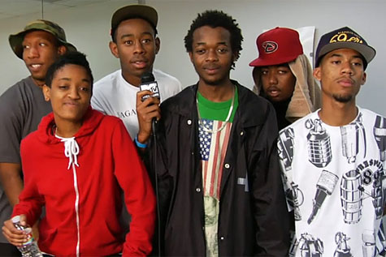
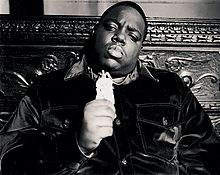
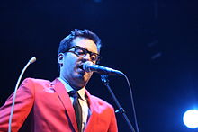

Also known as: OFWGKTA, Odd Future Wolf Gang Kill Them All, Golf Wang
Genres: Alternative hip hop, R&B
Years active: 2007–present 
(Birth name:Cameron Jibril Thomaz)
Born: September 8, 1987 (age 24)
Genres: Hip hop
Occupations: Rapper, singer, songwriter, actor
Years active: 2005–present
Born:May 21, 1972
(Birth name:Christopher George Latore Wallace)
Also known as:Biggie Smalls, The Notorious B.I.G., Big Poppa, Frank White
Genres: Hip hop
Occupations: Rapper
Years active: 1992–1997 
Birth name: Andrew Mayer Cohen
Also known as: Haircut
Born: February 2, 1979 (age 33)
Genres: Soul, neo soul
Occupations: Singer, producer, songwriter, arranger, audio engineer, DJ, rapper and multi-instrumentalist.
Years active: 2008–present 